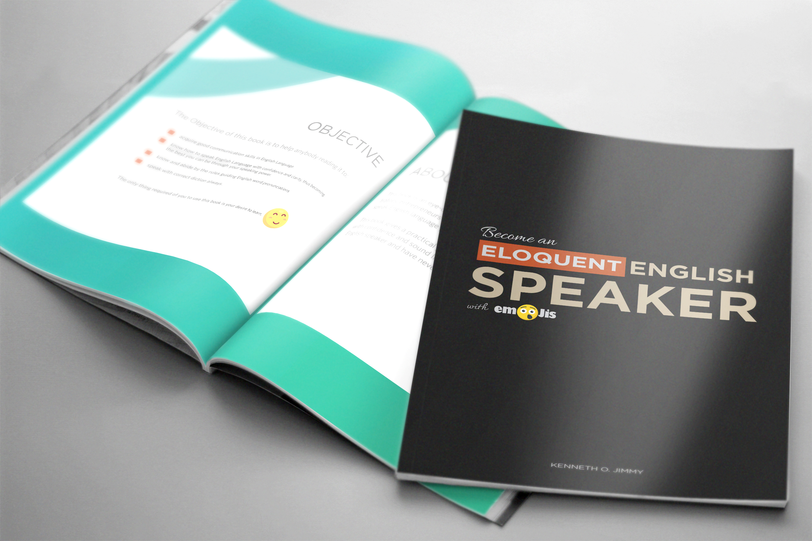

SYLLABLES
When we speak, we produce vowels and consonants which are individually contrastive sound units of the language. Since speech is a continuous activity, a speaker produces chains of vowels and consonants which may be combined to form a large unit called syllable.
A syllable is, therefore, defined as the smallest unit of a word. Every syllable must contain a vowel or the semi-vowel which is letter “y”. A word without a vowel or the semi-vowel cannot form a syllable.
An English syllable may have three parts which are the onset, the peak (nucleus) and the coda. The initial consonant in a word is called the “onset”. The “peak” is the vowel and every syllable must have a vowel even if it does not have an onset. While the “coda” is the final consonant.
Example of words with onset, peak and coda are get, Ben, fan etc.
Words with the peak only are a, awe etc.
Words with peak and coda are all, on, ought etc.
Syllables can be divided into:
- Monosyllabic words: Words with one syllable, for example, knife, pay, go. Monosyllabic words cannot be divided.
- Disyllabic words are words with two syllables. Example: mis-take, fan-ta, ga-ther.
- Trisyllabic words: Trisyllabic words with three syllables words. Example: lo-ca-tion, he-ri-tage, e-di-tion.
- Polysyllabic words are words with four or more syllables. Example: Com-mu-ni-ca-tion, mis-ma-nage-ment.
CORRECT PRONUNCIATION OF PLURAL MARKERS
In writing, the plural of regular nouns is usually expressed by adding “s,” but the plural marker may be pronounced as /s/, /z/ or /iz/.
To know how to pronounce the plural of words correctly, you need to know the rules guiding each pronunciation and when to pronounce a plural word as /s/, /z/ or /iz/.
- Rule One
The plural element is pronounced as /s/ if the sound preceding the plural element is /p, t, k, f, θ/
Example:
- Rule Two
The plural element is pronounced as /z/ if the sound preceding the plural element is a vowel or any of the voiced consonants /b, d, g, v, j, l, m, n, ŋ, ð/
Example:
- Rule Three
The plural element is pronounced as /ɪz/ if the sound preceding the element is any of the consonants /s, z, ʃ, tʃ, dʒ/.
Example:
PRONUNCIATION OF PAST TENSE MARKERS
The past tense of regular verbs is derived by adding the suffix, “ed” to the verb. The past tense element is the same for all the regular verbs, but the pronunciation is different. There are three forms of pronunciation which are /d/, /t/ or /id/. The form of pronunciation is determined by the sound preceding the past tense element.
The rules guiding the past tense element are as follows:
- Rule One
If the sound before the past tense marker is a vowel or voiced consonants, the past tense element is pronounced as /d/.
Example:
- Rule Two
If the sound before the past tense element is a voiceless consonant like /k, p, s, p, ʃ, tʃ, f/, the past tense element is pronounced as /t/.
Example:
- Rule Three
If a word ends with the consonant “t” or “d” before the past tense element, the past tense marker would be pronounced as /ɪd/.
Example:
You are advised to always consult a good dictionary to be sure of the correct pronunciation.
STRESS
Stress is an important feature of speech. English is a stressed-time language. So, it is very important to place the right stress on words in order to sound like the native speakers of English language. To work on stressing words appropriately, we need to know what stress is.
Stress is the relative emphasis or prominence placed on a certain syllable in a word, or on a certain word in a phrase or sentence.
During speech, the airstream flows, as the airstream flows, you are expected to exert pressure in the production of the sounds, but not equal effort for the production of all the sounds. This is because some syllables are pronounced louder and longer than other syllables (the syllable which is pronounced louder and longer is the stressed syllable).
Type of Stress
word stress
The stress placed on syllables within words is called word stress or lexical stress.
If a word consists of two syllables, the first syllable takes the stress. If the first syllable is a prefix, the second syllable takes the stress. The stressed syllable is usually written in capital letters.
SHIFTING STRESS
When you stress words in English, it has meaning. Therefore, a change in stress pattern of a word may change the meaning of the word.
Shifting stress, therefore, is a change in the stressed syllable. There are some words in English with the same spelling, but different meaning when stress is placed on them. When a stress is placed on the first syllable in a disyllabic word, it becomes a noun. Whereas, it becomes a verb when the stress shifts to the second syllable.
The shift from the first syllable to the second syllable reduces the quality of the vowel in the first syllable to the weak form /ə/.
Here are some words with the shifting stress.
SENTENCE STRESS
The stress placed on words within sentences is called sentence stress or prosodic stress.
An English sentence may contain words of different classes. Some of the words in a sentence might be more prominent than the others, and to distinguish which word is more important, you have to stress the more prominent words.
Words are classified into content words and grammatical words. The content words comprise nouns verbs, adverbs and adjectives. We can say they are words which make sense, but not complete sense; while the grammatical words comprise the prepositions, pronouns, articles, conjunctions and auxiliary verbs. The grammatical words are words which makes a sentence correct grammatically.
In spoken speech, the content words are stressed in a sentence while the grammatical words are unstressed.
Prosodic (sentence) stress is used to emphasize a particular word or the ideas associated with them e.g
Did he GIVE you the BOOK?
Do you NEED HIS attention?
In the first sentence, “Give” and “Book” are stressed.
For you to speak English correctly and sound better, you need to work on the stress pattern of words in connected speech.
As a speaker of English, stressing and using the right tone when speaking and pronouncing English words is very important. When you apply the right stress and intonation while speaking, you will realize your English becomes better and you can communicate with anyone effectively.
WHAT IS INTONATION?
Intonation can be defined as the rise and fall in the pitch of the voice when speaking. The type of tone you use when speaking English, determines whether a sentence is a statement, command, question or otherwise.
Your intonation conveys your attitude. This leads to some functions of intonation
ATTITUDINAL FUNCTION
The attitudinal function deals with expressing emotions and attitudes. Therefore, your attitude determines your intonation.
GRAMMATICAL FUNCTION
Example: In English, a falling pitch movement is associated with statements, but a rising pitch turns a statement into a yes/no question.
Take a look at this sentence “ I saw the money in my pocket”. This is just a statement showing the money was found in the pocket.
“Did you see the money in your pocket?" This question deals with a yes/no answer because the speaker wanted to know if the money was found in the pocket.
There are two main types of Intonation.
Knowing the types of intonation and applying the right tone when speaking English will help you in your communication process and improve your communication skill.
FALLING TUNE
This is the pitch movement of the voice from a region of high to a region of low. The falling intonation is usually used in declarative sentences, exclamation, commands and Wh - questions (these are questions that begin with “wh” such as what, why, which, when, whom, where and questions that demand some information).
You need to remember that you don’t stress preposition, articles, pronouns and auxiliary verbs when they appear in a sentence.
Look at the sentences below. We are going to use some of the uses of falling intonation to make sentences, take note of the stressed words. The stressed words are written in capital letters.
Statements
NICE to MEET you. /naɪz tə mi:t jə/
He GOT it RIGHT. /hə gɒt ət
raɪt/
Exclamations
WOW, it’s BEAUtiful! /waʊ əts ‘bju:təfəl/
What a surPRISE VIsit! /wɒt ə sə’praɪz ‘vɪzɪt/
Commands
CLOSE your BOOKS and LISten. /kləʊz jə bʊks ənd ‘lɪsn/
I said KEEP QUIet. /aɪ sed ki:p ‘kwaɪət/
Wh- Questions
WHAT is your NAME? /wɒt əz jə neɪm/
HOW OLD are YOU? /haʊ əʊld ə ju:/
RISING TUNE
Rising intonation is the pitch movement of the voice from a low pitch to a higher pitch.
The rising intonation is used to ask yes/no questions, to make a request and suggestion, to make list, for encouragement and for incomplete utterances.
Here are some sentences using the rising intonation.
Yes/No questions
Do you need some WAter?
Have you seen the LAWyer?
Request and suggestion
I think you can do it this way.
May I make use of the restroom, please?
To make list
Get me bananas, mangoes, oranges and apples.
I am going to the market to buy rice, beans, yam and plantain.
For encouragement
You’re not doing badly.
This is great.
For incomplete utterances
At the party yesterday...
I saw Daniel at the market and we talked about...